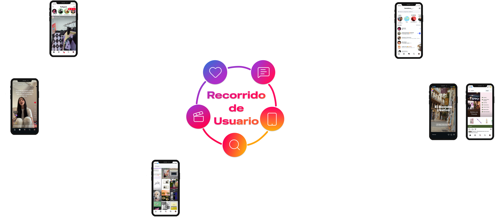

x Equipo 3
Mapa Sistémico

Viaje de Usuario

Scripts
1. Iconos Dinamicos

(@Talbi_ilust, 2026)
La función de los iconos variables es uno de los scripts fundamentales de la aplicación, modificándose con puntos de color rojo, los iconos que tienen algo “pendiente” por ser visto, permitiendo al usuario saber que cosas le faltan por ver. Este script se encuentra involucrado fuertemente en el inicio del viaje, al entrar a la aplicación ya que da una suerte de “lista de pendientes” por hacer antes de comenzar a utilizar la aplicación. Beneficiando así al usuario ya que no se queda con ningún mensaje sin leer, o novedad sin saber, pero también a la aplicación ya que aumenta el tiempo de consumo del usuario.
2. Refresh

(@ignacio_kalau, 2026) (@the.life.of.daisy.chain, 2026)
Al hacer “swipe” hacia abajo en la pestaña del feed, los reels o explorar, los datos se refrescan, dándonos nuevo contenido, notificaciones y novedades para seguir consumiendo. Esto lo podemos ver en todas las etapas del viaje, al ser este script un elemento transversal en el uso de la aplicación. El beneficio de esta función es tanto de usuario como plataforma, ya que el metadato del “refresh” es útil para la recomendación de contenido personalizado, y para el usuario lo ayuda a no aburrirse y seguir enganchado en la aplicación. Este script es considerablemente el más problemático de los tres, ya que, genera una sensación de “contenido infinito” y hace que aumente la adicción del usuario.
3. Auncios Personalizados

(Almacenes Paris, 2026)
En el feed la aplicación inserta anuncios personalizados, en base al contenido que es consumido por el usuario, o que se acerca más a su perfil. Esto se puede ver al igual que el script anterior de forma transversal a lo largo del viaje del usuario, encontrándose estos anuncios personalizados, insertados tanto en el feed, en explorar, como el apartado de reels. Siendo estos beneficiosos para la plataforma porque da sustento económico la existencia de estos anuncios, y al usuario porque lo puede ayudar a encontrar productos o servicios que estaba necesitando.
Re-Diseño Script Problemático

(@shivanshumathur, s/f) (@tallerideacion.uc, 2026)
¡Ha sido muchos refresh!
El rediseño del script del refresh, es tan sencillo como poner un límite a la cantidad de veces que podemos refrescar el contenido, poniendo un límite de una refresh cada cinco minutos. Para lograr esto pusimos un aviso integrado dentro de la app. En donde nos indica que ha sido mucho refresh, y que volvamos en cinco minutos.